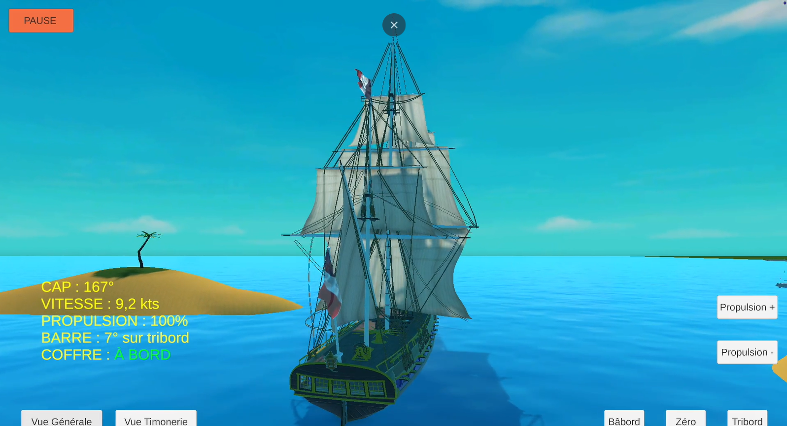
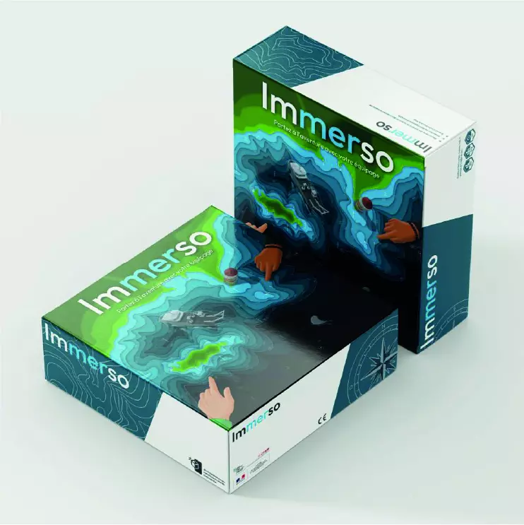

Les supports ci-dessous sont conçus pour être utilisés directement en classe ou adaptés
à vos contextes d’enseignement. Chaque ressource contribue à développer une culture
maritime commune chez les élèves.

Simulateur de navigation – Jeu interactif BIMer
Vidéo interactive · Collège / Lycée · 15–25 min
Jeu de simulation permettant aux élèves de s’initier aux règles de navigation maritime.
L’objectif est de retrouver un coffre en appliquant correctement les règles de route,
les priorités et les bonnes pratiques de sécurité. Idéal pour introduire ou consolider
les notions de navigation dans le cadre du BIMer.

IMMERSO – Initiation aux Métiers de la Mer et des Sciences Océaniques
Kit pédagogique · Collège / Lycée · Durée modulable
IMMERSO est un kit pédagogique destiné à faire découvrir les métiers de la mer
et les sciences océaniques à travers des activités concrètes et immersives.
Il constitue un excellent support pour enrichir les séquences BIMer et aborder
les grands domaines du monde maritime : sciences, techniques, environnement et métiers.
La Boîte BIMer – Présentation et usages pédagogiques
Vidéo · Collège / Lycée · 3–5 min
La Boîte BIMer est un ensemble de supports pédagogiques destinés à accompagner
les enseignants dans la mise en œuvre du BIMer. La vidéo présente le contenu
de la boîte, ses usages possibles et des exemples d’activités réalisables en classe.